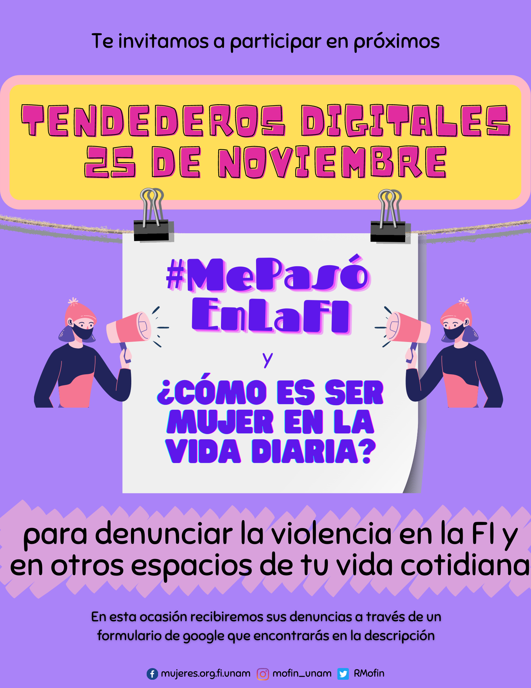

Tendedero digital de denuncias Facultad de ingeniería, UNAM
El 25 de noviembre pasado se llevó acabo el tendedero digital de denuncias en la Facultad de Ingeniera, UNAM, por parte del colectivo MOFIn (Mujeres Organizadas Facultad de Ingeniería) donde intengrantes mujeres de la comunidad estudiantil colgaron denuncias por situaciones de acoso y violencia de género, perpetradas por compañeros y autoridades de la Facultad y la universidad en general.